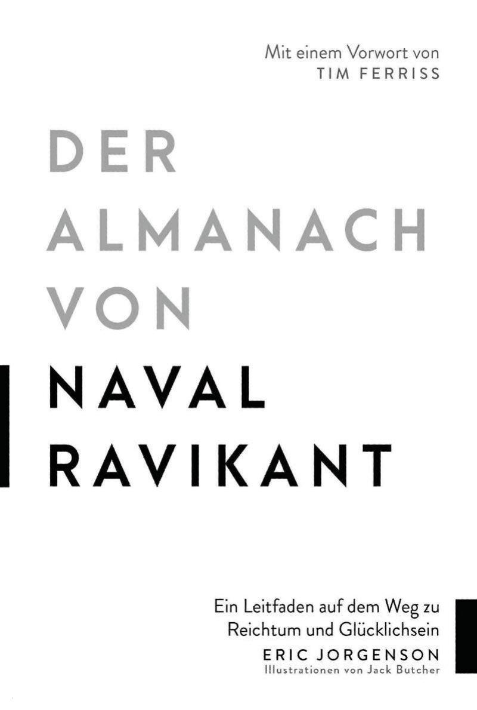

How to get rich without needing luck, and how to be happy on purpose. Eric Jorgenson gathered a decade of Naval's tweets, podcasts and interviews into one book, in Naval's own words. It has two halves: wealth and happiness. Naval's point is that both are skills you can learn.

Naval Ravikant founded Epinions and AngelList and was an early investor in Uber and Twitter. He never wrote a book. Eric Jorgenson, a product strategist from Kansas City, collected what Naval had said on Twitter, in blog posts and in long podcasts with Shane Parrish, Joe Rogan and Tim Ferriss. He edited it for clarity, grouped it by topic and published it as a free public service. Naval earns nothing from it.
That shapes how it reads. There is no argument that builds over chapters. Each chapter is a set of short passages, each ending with a source number, often followed by a tweet that sums it up. Jorgenson asks you to read generously: everything here is out of context by definition, wording drifts between media, and the transcripts have been edited several times. You can start anywhere. The book says so itself: "choose your own adventure".
Tim Ferriss had promised never to write a foreword. He made an exception for three reasons: the book is free, he has wanted it to exist for over a decade, and it raises the odds that Naval names his next child "Tim". He doesn't take Naval seriously because of the money. He takes him seriously because Naval questions almost everything, reasons from first principles, is good at not fooling himself, changes his mind often, laughs a lot and doesn't take himself too seriously. Ferriss's warning sets the tone for the whole book: test the advice against your own life under stress, and don't just parrot it.
“Pay attention, but don't simply repeat his words. Think about everything, and treat nothing as dogma.”Tim Ferriss, foreword
Naval grew up in Queens with a single mother who worked, studied and raised two latchkey boys. His father had been a pharmacist in India; his degree didn't count in America, so he worked in a hardware store. The family did not stay together. The neighbourhood wasn't safe, so the public library became Naval's after-school care: straight there from school, home when it closed. "My only real friends were books." His first job, at 15, was with an unlicensed caterer delivering Indian food from a van. Before that he had delivered newspapers and washed dishes.
One thing he credits with saving his life: he passed the entrance test for Stuyvesant High School. That stamp led to an Ivy League college and then into tech. He calls it an "intelligence lottery" that can move you from the working class to the educated class in one step. He also credits his mother's unconditional love. Even if you have nothing else, one person who loves you without conditions does wonders for your self-worth.
By the time of the book he had invested personally in about 200 companies, sat on boards, was a small partner in a crypto fund and chaired AngelList. He sums up his life in two sentences, and they set up the book's two halves.
“I was born poor and miserable. Now I'm fairly wealthy and very happy. I worked at it.”Naval
How to get rich without getting lucky. "Making money isn't a thing you do. It's a skill you learn."
Naval says that if he lost all his money and were dropped on a street in any English-speaking country, he would be rich again within five or ten years. It wouldn't depend on hard work. You can work 80 hours a week in a restaurant and never get rich. It would depend on a set of skills anyone can learn: knowing what to do, with whom, and when.
He worked out the principles as a teenager of 13 or 14 and says he has lived by them for 30 years. In 2018 he put them into one Twitter thread, "How to Get Rich (without getting lucky)". The whole first part of the book unpacks that thread. Each line could fill an hour. If you absorb them and work hard for ten years, he says, you will get what you want. The key lines:
How to get rich (without getting lucky)
Seek wealth, not money or status. Wealth is assets that earn while you sleep. Money is how we move time and wealth. Status is your place in the social hierarchy.
Understand that ethical wealth creation is possible. If you secretly despise wealth, it will elude you.
Ignore people playing status games. They gain status by attacking people playing wealth-creation games.
You're not going to get rich renting out your time. You must own equity, a piece of a business, to gain financial freedom.
You will get rich by giving society what it wants but does not yet know how to get. At scale.
Pick an industry where you can play long-term games with long-term people. Play iterated games. All the returns in life, whether in wealth, relationships or knowledge, come from compound interest.
Pick business partners with high intelligence, energy and, above all, integrity. Don't partner with cynics and pessimists. Their beliefs are self-fulfilling.
Learn to sell. Learn to build. If you can do both, you will be unstoppable.
Arm yourself with specific knowledge, accountability and leverage.
Specific knowledge is knowledge you cannot be trained for. If society can train you, it can train someone else and replace you. It is found by pursuing your genuine curiosity, not whatever is hot. It feels like play to you and looks like work to others. It is taught through apprenticeships, not schools, and it is often highly technical or creative, so it can't be outsourced or automated.
Embrace accountability and take business risks under your own name. Society will reward you with responsibility, equity and leverage.
"Give me a lever long enough and a place to stand, and I will move the earth." Fortunes require leverage: capital, people, and products with no marginal cost of replication (code and media).
Capital and labour are permissioned leverage: someone has to give you money, or follow you. Code and media are permissionless. They are the leverage behind the newly rich. An army of robots is freely available, packed into data centres. Use it. If you can't code, write books and blogs, record videos and podcasts.
Leverage is a force multiplier for your judgment. Judgment takes experience, but you can build it faster by learning foundational skills.
There is no skill called "business". Avoid business magazines and business classes. Study microeconomics, game theory, psychology, persuasion, ethics, mathematics and computers. Reading is faster than listening. Doing is faster than watching.
You should be too busy to "do coffee" while still keeping an uncluttered calendar.
Set and enforce an aspirational personal hourly rate. If fixing a problem saves less than your hourly rate, ignore it. If outsourcing a task costs less than your hourly rate, outsource it.
Work as hard as you can, even though who you work with and what you work on matter more than how hard you work.
Become the best in the world at what you do. Keep redefining what you do until this is true.
There are no get-rich-quick schemes. That's just someone else getting rich off you.
Apply specific knowledge, with leverage, and eventually you will get what you deserve.
When you're finally wealthy, you'll realise it wasn't what you were seeking in the first place. But that is for another day.
Asked to compress the thread into two words, Naval chooses productize yourself. "Yourself" stands for what is unique: your specific knowledge and your accountability, since your name is on it. "Productize" stands for leverage and scale. The words give you two test questions for any long-term plan. First: is this authentically me? Then: am I turning it into a product? Does it scale, through people, capital, code or media? Simple to ask, hard to answer. It can take close to a decade just to find out what you uniquely have to offer.
Money is how we transfer wealth. Naval calls it social credit: an IOU on other people's time. If you do good work for society, society says "thank you, we owe you something for that in the future", and writes you a little note called money. Wealth is the thing that produces: the factory, the robots, the software that serves customers at night, even cash in the bank waiting to be invested. A house you rent out counts too.
Society pays you for creating things it wants but doesn't yet know how to get. If it knew, it wouldn't need you. That is why so much wealth comes from technology. Oil was once technology and made Rockefeller rich; cars made Ford rich. Danny Hillis (the book first credits Alan Kay, then corrects itself) defined technology as everything that doesn't work yet. Once it works, it stops being called technology. Your job is to find the new thing you can naturally provide, and then work out how to make a thousand, a million or a billion of them. Steve Jobs and his team saw that people wanted a computer in their pocket with every function of a phone times a hundred. They worked out how to build it, then how to scale it.
Specific knowledge can't be taught, but it can be learned. To find it, look at what you did almost effortlessly as a child or teenager. You didn't see it as a skill, but the people around you noticed it. Your mother or your best friend from childhood could probably tell you. Naval's examples: a knack for sales, musical talent that picks up any instrument, an obsessive personality that dives deep and remembers fast, a love of science fiction that loaded you with knowledge, lots of gaming and so a feel for game theory, gossiping and working your friend network, which might make you a fine journalist. It comes from an odd mix of your DNA, your upbringing and how you responded to it.
Sales is his favourite example. Some people are natural salespeople, and you know it within minutes of meeting them. They learned it on the playground or negotiating with their parents, not in class. You can still improve: read Robert Cialdini, take a sales course, or try door-to-door sales, which is brutal but teaches you fast.
His own case: he loves reading and technology, learns fast and gets bored fast. Twenty years buried in one field would never have worked. Venture capital rewards exactly his traits, including getting bored quickly. He grew up revering scientists. To him they sit at the top of humanity's production chain, and applied scientists will turn out to be the most powerful people in the world. He wanted to be a great scientist himself. Looking back, he spent his time on money, tinkering with technology and persuading people. At 15 or 16 he told a friend he would be an astrophysicist. His mother called from the kitchen: "No, you're going into business." He thought she had no idea what she was talking about. She knew exactly.
Specific knowledge often sits at the frontier, in things that are only just being figured out or are genuinely hard. If you're not 100% into it, someone who is will beat you, and not by a little. In the world of ideas, compounding and leverage stretch small differences into huge ones.
“Escape competition through authenticity.”Naval, a tweet that didn't fit the thread
If you compete with someone, it's because you're copying them. Build something from scratch that is an extension of yourself, and nobody can compete with you. Who is going to out-Rogan Joe Rogan, or draw a better Dilbert than Scott Adams, or outdo Bill Watterson at Calvin and Hobbes? Nobody can be better at being you than you. The internet makes this practical: it offers an audience for every niche, as long as you serve it best. And since everyone is unique, everyone is best at one thing: being themselves.
The most important skill for getting rich is becoming a perpetual learner. The old model was four years of college and 30 years in one job. Now you may need to get up to speed in a new field within nine months; it may be gone four years later, but those three productive years can make you rich. Foundations make this possible. If a library book is too hard for you, ask what foundational knowledge you're missing. Arithmetic and number sense matter more than advanced maths. Explaining yourself simply, in your own language and in English, matters more than poetry or seven languages. Being persuasive matters more than being an expert in digital marketing. Know the basics 90 to 100 percent. Then go deep in one or two things, usually the ones you're obsessed with, or your knowledge will be a mile wide and an inch deep.
Compound interest isn't only about capital. It decides who runs public companies and who is trusted with billions. They have stayed in their business for decades and proved their integrity in ways others can see and check. Reputation compounds the same way: a good name built over decades can end up worth thousands of times more than a talented person's who never kept it compounding. In a long relationship the small frictions are forgotten and negotiations get easy, because both sides know it will work out.
His example is the angel investor Elad Gil. Elad always gives Naval a little extra on a deal, rounds in his favour, and quietly pays fees out of his own pocket without mentioning it. So Naval sends him every deal he can and tries to do the same in return. His co-founder Babak Nivi put it this way: in a long-term game everyone makes each other rich; in a short-term game everyone makes themselves rich. Long games are positive-sum. Everyone is baking the same pie. Short games only divide the slices.
A harsher corollary: 99 percent of effort is wasted. Most of the papers you wrote at university, the languages you learned and forgot, the people you dated before your spouse, did nothing for the goal (though you learned from all of it). You can't skip the 99 percent, because the 1 percent is hard to spot. The point is to recognise the 1 percent when you find it, the field or person you could invest in for the rest of your life, and then go all in and drop the rest. If a relationship won't lead to marriage, move on. If a course will never be useful, stop going.
Labour and capital have to be given to you by other people. To get them you need credibility, and you build it best under your own name, which is risky. Accountability cuts both ways: credit when things go well, blame when they fail. We are wired not to fail in public. But debtors' prisons are gone, bankruptcy can clear debts, and Silicon Valley at least forgives failure if you were honest and tried hard with integrity. So people should take far more accountability than they do.
His own example: until about 2013 or 2014, his public persona was all startups and investing. When he started posting about philosophy and psychology, colleagues messaged him privately to say he was ruining his career. Same with crypto, early. Putting your name behind something carries risk, and it also brings the reward. In old times the captain went down with the ship. In business the risk is milder: you are the last to get your capital back and the last to be paid for your time.
Without equity there is no path to financial freedom. A doctor or a lawyer can earn well, but they are paid for time. Their output is tied to their input. They earn nothing while they sleep, on holiday or in retirement, and their income doesn't grow non-linearly. Doctors who get really rich open a practice with a brand that attracts patients, or invent a device or procedure they own. An employer pays you the minimum needed to make you take the job, however high that minimum is. They carry the risk and own the brand and the IP. Owning equity means owning the upside; owning debt means a guaranteed income with the downside risk. Start small: some shares, stock options at a tech company. Real wealth usually comes from starting your own company or from investing.
Other people working for you. Naval calls it the worst form of leverage in the modern world. Managing people is incredibly hard, and you are always one step from mutiny. It impresses your parents. Don't waste your life chasing it.
Money multiplies every decision. The richest people of the last century were bankers and money movers, and the CEO job at big old firms is mostly a finance job. Managing more money is far easier than managing more people.
Products with no marginal cost of replication: books, films, podcasts, software. It started with the printing press, sped up with broadcasting and exploded with the internet. Nobody has to give you permission. Every new fortune, from Bezos and Zuckerberg to Joe Rogan, comes from here.
"Forget rich versus poor, white-collar versus blue. It's now leveraged versus unleveraged." Humans evolved where eight hours of chopping wood meant eight hours of output. With leverage, the right piece of code can create half a billion dollars of value, while ten engineers working ten times as hard on the wrong product create nothing. Input and output come apart, and the more creative the work, the further apart they get. So aim for a job where you control your time and are judged on results. If you have specific knowledge, accountability and leverage, they have to pay you what you're worth, and you get your time back. No meetings for show, no work theatre. You work when you have energy and rest when you don't.
Sales at the top end is a good example: an elite estate agent can sell a $5 million house in a tenth of the time someone else spends on a $100,000 flat. Customer support is the opposite: input and output are tied, and hours are what count. In tech, you need to be able to build or sell. "Build" can mean design, engineering, manufacturing, logistics, or in a laundry business getting every garment to the right place on time. "Sell" includes marketing, recruiting, fundraising, inspiring people and PR.
Naval walks up the real-estate industry to show how leverage, accountability and specific knowledge stack:
Figures as Naval gives them. Each step adds leverage, accountability and specific knowledge; compounding over a long time does the rest.
One thing to avoid on the way: the risk of ruin. Don't do anything illegal; no win is worth an orange jumpsuit. Don't risk your body or your health. Never bet everything you have at once. Make rational, optimistic bets with large upside instead.
Naval wants to be paid only for judgment, while robots, capital or computers do the work. If someone is right 85 percent of the time instead of 75, you'll pay them $50, $100 or $200 million to steer a $100 billion ship. That is why CEOs are paid so much: leverage magnifies small differences in judgment. Proven judgment, with accountability and a clear track record, is what counts. Warren Buffett is the purest case. He has been accountable in public for decades and built a reputation for integrity, so people give him unlimited leverage. Nobody asks how hard Warren works or when he gets up. They say: "Warren, do your thing."
Naval had his share of bad luck. He lost his first small fortune in the stock market right away. His second, he says, his business partners took from him. Only the third attempt worked, and even then the money came in many small pieces, not one jackpot: more options, more companies, more investments, a few chips at a time. Today he has more opportunities than time.
The tool he leans on is an absurdly high personal hourly rate. Nobody will value you more than you value yourself. When he had no money he told himself his time was worth $5,000 an hour; looking back, $1,000 would have been closer. Annualised, that is several million dollars. Every errand gets priced: an hour across town to fetch something costs $100 if you're worth $100 an hour. Would you pay that? He still argues with his wife, and with his mother when she gives him chores: "I'm not solving this problem." He'd rather pay for an assistant, and he would rather throw a broken speaker in the bin than return it. Outsource anything that costs less than your rate, even cooking. Ironically, he thinks he beat even the $5,000. He calls himself lazy and works in bursts when something truly motivates him.
"If you secretly despise wealth, it will elude you." If you compare, you'll resent people who have more, and people sense it when you try to do business with them. People play two big games. The money game is positive-sum and young in evolutionary terms. The status game is old and zero-sum. Monkey tribes already played it: for number three to become number two, number two has to be knocked down. Politics and sport are status games. Many people who believe deep down that they can't make money attack the whole system: "making money is evil, nobody needs money". They are playing for status. Avoid those games. They turn you into an angry, combative person.
For young people the most important thing is to spend more time on the three really big decisions: where you live, who you live with, and what you do. You may live in a city for ten years, keep a job for five and stay in a relationship for decades. Spend a year or two thinking about each and cancel everything else. His advice to a young engineer weighing a move to San Francisco: do you want to leave your friends behind, or be left behind by them?
His first company came from shame, not a plan. At @Home Network in 1996 he told everyone, his boss and colleagues included, that he was really an entrepreneur who would soon leave to found a company. Then he didn't. People kept asking why he was still there, and he was literally shamed into starting it. He'd rather be a failed entrepreneur than someone who never tried, because even the failed one has the skills to make it alone. An old boss once warned him: "You'll never be rich, because you're obviously smart, and someone will always offer you a job that's just good enough."
Humans evolved as hunter-gatherers, each working for themselves. Farming made us hierarchical, and factories made us extremely so. The internet is taking us back toward self-employment. There are nearly seven billion people; Naval hopes one day there will be nearly seven billion companies.
He learned to make money because he had to. The year he created the most wealth was the year he worked least and thought least about the future. He told people he was retired and spent his time on the projects he cared about most. Doing things for their own sake is one definition of art, and history remembers the artists, in business, science and politics too. He can now set up a company in three months: raise money, hire a team, launch. That he makes money from it is almost a side effect, and his motivation has moved from goal-driven to artistic, which he thinks makes him better at it. He passes on great investments if the product bores him. "I'm always 'working'. It looks like work to others but feels like play to me. That's why nobody can compete with me. I'm just playing, 16 hours a day."
“Retirement is when you stop sacrificing today for an imaginary tomorrow.”Naval
There are three ways to retire in that sense: save enough that passive income covers your burn; cut your burn to zero and become a monk; or do something you love so much that money stops being the point.
What is enough? Money isn't the root of all evil, but the love of money hurts you, not society. It is a bottomless pit. You get the punishment at the same time as the money: you want more, and you grow paranoid about losing what you have. His defence: don't upgrade your lifestyle as you earn more, and ideally earn in large lumps rather than a slow rise, so there is no time to adjust and you can jump straight to freedom. Freedom is his highest value. As long as money buys freedom, it's great. Past a certain point it makes you less free.
Do you have to start a company? Not necessarily. In Silicon Valley the most successful people on a risk-adjusted basis, apart from VCs, are those who are good at spotting companies just reaching product-market fit and joining early, like the people who went from Google to Facebook when it had a few hundred staff and then on to Stripe. When Zuckerberg panicked about scaling, Jim Breyer pointed him to exactly such a product head. Early promotion matters a lot and is easier at small companies, where there is less structure in the way.
"Rich without getting lucky" means being wealthy in 999 out of 1,000 parallel universes, not just the 50 where you got lucky. Naval and Babak Nivi describe four kinds of luck:
Something happens that you had no influence on: fate, chance. You hope it finds you.
You create so much energy and activity, stirring the petri dish, that luck runs into you.
You know a field so well that you notice a breakthrough others walk past. A sensor for luck.
You build a unique character and reputation, so opportunities come to you. At that point it isn't luck any more but destiny.
For the fourth kind he gives the image of the world's best deep-sea diver. Someone finds a sunken treasure ship by blind luck but can't reach it. They come to you and hand you half. Their luck became yours, because you made yourself the person it had to go through. The same goes for a trustworthy, long-term deal-maker with high integrity: when strangers want to do business but can't trust each other, they come to you and give you a cut. Buffett is offered companies, warrants and bank rescues nobody else gets, because of his reputation.
On networking: business networking is a waste of time. Build something interesting, show and practise your craft, and the right people will find you. On trust: someone who talks a lot about how honest they are is probably dishonest; someone who praises their own values is probably hiding something. When a successful friend treats someone badly, Naval warns them once. Not because of karma, but because you can't hide from yourself: your flaws are written into your psyche, and the worst thing is not respecting yourself. It never helps, so he then quietly removes the person from his life.
“The closer you want to get to me, the better your values have to be.”Naval
Something he learned late: in tech, great people get great results eventually. People he met early in his career and thought "this one is extraordinary" were, almost without exception, very successful 20 years later. It never happens on the timeline you or others want, but it happens. Don't keep count, or you'll run out of patience before success arrives. The most common bad advice he hears is "you're too young". Most of history was made by young people who only got recognised when they were older.
It won't be easy. It's the hardest thing you'll do. Look at kids born rich: they often have no meaning. "Your real résumé is just a catalogue of all your suffering." On your deathbed you'll remember the sacrifices and difficulties, not what you were given. To create meaning you have to do something hard anyway, and making money is a good choice. Money buys freedom in the material world. It won't make you happy, fit, calm or fix your family, and it won't switch off the anxious, combative person you trained yourself to be over decades of earning it. Then you still have to learn to be happy.
But first, he says, let's get you rich. He's pragmatic about it: the Buddha was a prince. Monks used to give up money, sex, family and science to find peace. Now there is money in a bank account. Do useful work, live a little below your means, and you buy the time and energy to pursue inner peace.
“Let's make everybody rich. Let's make everybody fit and healthy. And then let's make them all happy.”Naval
You won't get rich by saving money. You get rich by saving time to make money. Hard work is overrated. Judgment is underrated. Naval defines wisdom as knowing the long-term consequences of your actions, and judgment as wisdom applied to external problems. In an age of leverage, one right decision can be the jackpot. Which direction you walk matters more than how fast, especially with leverage.
"Clear thinker" is a better compliment than "smart". Real knowledge is built up from the foundations: you can't understand trigonometry without arithmetic and geometry. People who throw around jargon and big concepts often don't know what they're talking about. If you can't explain it to a child, you don't know it. Feynman, in Six Easy Pieces, builds maths from the number line to algebra in three pages, one unbroken chain of logic with no definitions. If you can't re-derive a concept from the basics when you need it, you've only memorised it.
The biggest thing keeping us from seeing reality is our preconceived idea of how it should be. The "monkey brain" offers the same emotional answer about how the world ought to work. A painful moment can be defined as the moment you see something exactly as it is: the company you believed was fine fails, because you ignored the signs. The good news is that suffering is a moment of truth, and you can only make progress if you start from the truth. The smaller your ego and the less you want a particular outcome, the more of reality you can see. You see it easily when a friend goes through a breakup: you can tell in a minute what's going on. They can't, because their wish is colliding with reality. Naval tries to admit in public, to co-founders, friends and colleagues, when something isn't working. If he hides it from no one, he can't hide it from himself.
Thinking needs empty space. If you don't have a day or two a week in your calendar with no meetings, you won't be able to think, have good business ideas or use good judgment. Schedule two, because if you schedule two you'll end up with at least one. Great ideas come only after boredom, never while stressed, busy or rushing.
Our egos form in the first two decades of life, shaped by parents and society, and then we spend the rest of life trying to make that ego happy. We need habits to function, so we bundle them into an identity: "I'm Naval, this is how I am." It's important to de-condition yourself from them. Look at each habit and ask: I probably picked this up as a child to get my parents' attention; does it still serve me? Does it make me happier, healthier, more effective?
Any belief you took on as a package (Democrat, Catholic, American) is suspect and should be re-examined from first principles. He identified as a libertarian for a while and found himself defending positions he had never thought through, just because they were part of the canon. If all your beliefs fit into neat bundles, be suspicious. If you want to be honest, speak without identity. A contrarian belief that your own identity and your local tribe reject is all the more likely to be true. Suffering teaches two things: to accept the world as it is, and, painfully, to change your ego, as when an athlete like Bruce Lee is badly injured and has to become a philosopher.
“Tension is who you think you should be. Relaxation is who you are.”Buddhist saying
The classical virtues are all decision-making heuristics that make you optimise for the long term rather than the short term. Almost all biases are time-saving heuristics, so for important decisions, set aside memory and identity and focus on the problem. Hold self-serving conclusions to a higher standard.
Radical honesty, for Naval, simply means wanting to be free: to say what he thinks and think what he says. Quoting Feynman: you must not fool yourself, and you are the easiest person to fool. The moment you lie to someone, you've lied to yourself and begun to believe it. He pairs honesty with an old Buffett rule: praise specifically, criticise generally. Criticise the approach, not the person. When you praise, find the best example of the thing and praise that person by name. That way people's egos work for you, not against you. Can you train blunt honesty? Start now and tell everyone. It doesn't have to be blunt: charisma is projecting confidence and love at the same time, and it is almost always possible to be honest and positive.
Being right 80 percent of the time instead of 70 can mean being valued hundreds of times higher. If he manages a billion dollars and is right 10 percent more often, his judgment creates $100 million of value. With code, people and capital behind decisions, the leverage keeps rising. He loves Shane Parrish's Farnam Street because it is entirely about deciding better.
The brain is a prediction machine built on memory. "X happened before, so X will happen again" is a bad way to predict, because circumstances differ. You need principles: mental models. His best ones come from evolution, game theory, Charlie Munger, Nassim Taleb and Benjamin Franklin. He uses tweets, his own and others', as compressed maxims, like pointers to experiences. Without the experience, they read as a quote collection you make into a poster and forget.
Much of society can be explained by sexual selection: sperm is abundant, eggs are scarce, and civilisation sorts out who gets to reproduce. With thermodynamics, information theory and complexity, it explains and predicts a lot.
He doesn't claim to know what works. He tries to eliminate what won't. Success is about not making mistakes rather than always being right.
Taught him in the 1990s the limits of what we know. We're fundamentally ignorant and terrible at predicting the future, so build systems that work amid ignorance.
You can't do well in a capitalist society without understanding supply and demand, labour and capital, game theory. Read a microeconomics textbook cover to cover.
"If you want it done, go. If not, send someone" (attributed to Caesar). Owners care; agents optimise for themselves. Small companies make everyone feel like a principal. Tie pay to exact value created.
10 percent on $1 gives $1.10, $1.21, $1.33. At 30 percent a year for 30 years you don't end with 20 or 30 times your money but thousands of times. A product with 100 users growing 20 percent a month reaches millions surprisingly fast.
Skip trigonometry and calculus drills. Be very good at multiplication, division, exponents, probability and statistics.
The statistics of extreme, improbable events. Taleb, "one of the greatest philosopher-scientists of our time", did the pioneering work.
Understand the idea of measuring change in small steps, not solving integrals on command. Business won't ask you to.
If a theory makes no falsifiable predictions, it isn't science. That's why he thinks macroeconomics has been corrupted: you can't run the US economy twice.
Should I marry this person, take this job, buy this house, move to this city, start working with this person? If you can't decide, the answer is no. Modern society offers a huge range of options: seven billion people, all reachable online, hundreds of thousands of careers. We evolved in tribes of 150, where someone who turned up might have been your only chance at a partner, so we underestimate how many options exist. Meanwhile these choices last: a company takes ten years, a relationship five or more, a city ten or twenty. Say yes only when you're very sure. If you're making a spreadsheet of pros and cons, forget it.
When two options are roughly equal, take the one that is more painful in the short term. By definition, if two paths are equal and one has short-term pain, it must carry long-term gains, and with compounding, long-term gains are what you want. Your brain's conflict avoidance pushes you away from short-term pain, so lean against it. Exercise isn't fun for him, but he's healthier for it. A confusing book feels like a sore muscle, for the brain.
"What's the most efficient way to build new mental models? Read a lot." If you read science, maths and philosophy for an hour a day, you will probably be in the top ranks of human achievement within seven years. We live in the age of Alexandria: every book is at our fingertips. The means of learning are abundant; the desire to learn is scarce.
Reading was his first love: Reader's Digest issues on the floor of his grandfather's house in India, comics, whatever he could get. Nobody told him what to read, so he read a lot of what would now count as mental junk food. He reads only an hour or two a day, which he thinks puts him in the top 0.00001 percent and explains whatever material success and intelligence he has. Most people read about a minute a day. Making it a habit matters more than what you read; your interests will lead you to the good stuff.
“Read what you love until you love to read.”Naval
How he actually reads is less reverent than you might expect. He has a short attention span, skims, jumps and remembers no passages verbatim; books dissolve into the fabric of his psyche. He reads as many books again as new ones, agreeing with a tweet that you only need to reread the 100 great books. If you realise halfway through that you've read a book before, you were ready to read it again. He starts at the beginning, reads fast, and skips ahead or puts the book down if the first chapter doesn't grab him. Most non-fiction states one thesis and then piles on examples; once he has the core, he's happy to stop. "The number of books completed is a vanity metric." Don't read books written to make money. To absorb what you read, explain it to someone: teaching forces learning.
Twitter made him a worse reader and a much better writer. For a while he slid from books to blogs to Twitter and Facebook, living on small dopamine snacks and learning nothing. Getting back into books took a trick: treat them like disposable blog posts. Buy any book someone mentions, keep ten to twenty going at once, skip, start in the middle, feel no duty to finish.
What to read matters for your foundation. Some well-read people aren't smart because they read the wrong things in the wrong order, and those half-truths became the axioms they judge everything else by. So build on the solid ground: maths, the hard sciences, microeconomics. Read originals: Darwin before Dawkins; Adam Smith, von Mises or Hayek before modern macroeconomists; Marx himself if you like socialist ideas, rather than today's interpretations. Then no book in the library will scare you. Some will be too hard. Read them anyway, and again later.
The older the problem, the older the solution. How to drive a car or fly a plane is a modern problem, so read something modern. How to stay healthy, calm and peaceful, which values to hold, how to raise a family: those are old problems, and any book that has survived 2,000 years has been filtered by many people, so its principles are more likely to be right.
“A calm mind, a fit body and a house full of love. These things cannot be bought. They must be earned.”Naval
"The three big things in life are wealth, health and happiness. We pursue them in that order, but their importance is reverse."
Ten years earlier Naval would have brushed the question off. On a scale of one to ten he'd have said two or three, four on his best days, and happiness wasn't something he cared about. Now he puts himself at nine. Money helps, but it is a small part. The bigger part is that he decided his own happiness was the most important thing and cultivated it with many techniques, like fitness or nutrition.
Answers to questions like this are personal; what works for him may be nonsense for you. For some people happiness is flow, for others satisfaction or contentment. His current definition: happiness is the default state. It is what is there when you remove the sense that something is missing from your life. We are survival-and-replication machines walking around saying "I need this, I need that", caught in a web of desires. When nothing is missing, the mind stops running into the past or future, and for a moment you are at peace.
So happiness isn't positive thinking. Every positive thought carries a negative one inside it, as a contrast; the Tao Te Ching says it better. For him happiness is the absence of desire, especially for external things. The more he accepts the present, the happier he is. And the moment he thinks "now I'm happy" and tries to hold on to it, it's gone, because the mind is moving again, trying to make something temporary permanent.
Nature has no concept of happiness or unhappiness. It follows unbroken mathematical laws from the Big Bang until now; a tree has no idea of right and wrong. You're born, have a string of sensory experiences, and die. How you interpret them is your choice. That is what he means by happiness being a choice. Once you believe that, you can start working on it.
It also helps him to believe in the complete insignificance of the self. If you're the most important thing in the universe, the universe must bend to your will, and when it doesn't, something is wrong. If you see yourself as an amoeba, or your work as writing on water or building castles in the sand, you have no expectations of how life should be. The neutral state that remains isn't dull. It's how small children live, absorbed in their surroundings without a thought for how things should be.
Does meditation help? Yes, though it's remarkable how little. You can meditate for years, and when someone says the wrong thing the wrong way, you fall right back into your ego. It's like lifting one-pound weights and then having a huge barbell dropped on you. Real happiness only comes as a side effect of peace, mostly through acceptance, not by changing your environment. His own list of what worked:
You can raise your baseline happiness slowly but steadily and systematically, the way you raise your fitness. The mind is as malleable as the body. We spend huge effort changing the outside world, other people and our bodies, and accept ourselves as we were programmed in youth. Memory and identity are burdens from the past that keep us from living freely in the present.
Walking down any street, only a tiny part of your brain is on the present; the rest is planning or regretting. That stops you from seeing the beauty around you and being grateful for where you are. "I don't believe in anything from my past. Nothing. No memories, no regrets. No people. No trips." Much of our unhappiness comes from comparing the past with the present. A great definition he once found: enlightenment is the space between your thoughts. It isn't something you get after 30 years on a mountain. You can have it moment to moment, a little more each day.
"Happiness" is an overloaded word. These days it means calm to him more than joy. Many people carry a constant low-level anxiety, a "nexting" feeling: always thinking about the next thing while at this one. It becomes obvious when you try to sit and do nothing at all, no book, no music. You can't, because the anxiety pushes you to get up and go. He doesn't fight it. He notices that the thoughts are making him anxious and asks: would I rather have this thought or my peace? As long as he has the thoughts, he won't have the peace.
The most common mistake, he says, is believing some external circumstance will make you happy. It's basic Buddhism, and he claims no credit. Once, waiting for a new car, he read the online forums about it every night. It's a stupid object; it won't change his life, and he'll stop caring once it's at the door. He was addicted to the wanting. That doesn't mean you should avoid the outside world. You're a living being, you locally reverse entropy, you're here to do things. The illusion is only that changing something out there will bring lasting peace.
“Desire is a contract you make with yourself to be unhappy until you get what you want.”Naval
So choose desires very carefully. He tries to have only one big desire at a time and to recognise it as the axis of his suffering, the place where he has decided to be unhappy. Perfecting your desires matters more than doing things you don't fully want. When you're young and healthy you do more and so pile up desires without noticing that they slowly kill your happiness: young people are less happy but healthier, older people happier but less healthy. Young, you have time and health but no money; in middle age money and health but no time; old, money and time but no health. The goal is all three at once. By the time people realise they have enough money, they've lost their time and health.
Confucius said we have two lives, and the second begins when we realise we only have one. Naval's began when he reached the material and social success he had fought for and saw that the people around him with similar or greater success weren't happy. He adapted to everything quickly. The conclusion, banal as it sounds, was that happiness comes from within, and he turned to inner work. You still do the outer things; you're wired to. But life brings you back to the inner path.
Who is successful? Most people name winners of their own game: athletes name athletes, entrepreneurs name Elon Musk. Naval would name Steve Jobs, Marc Andreessen for his work at Netscape, Satoshi Nakamoto for Bitcoin. But the real winners, he says, are the ones who leave the game entirely, people with such inner self-control and self-knowledge that they need nothing from anyone. His trainer Jerzy Gregorek is one: at peace, and indifferent to whether he earns more or less than others. The Buddha and Krishnamurti are others. Pascal wrote that all of humanity's problems stem from man's inability to sit quietly in a room alone. If you can sit for 30 minutes and be happy, you've succeeded.
The irony is that most of us try to reach peace through war: starting a company, fighting a flatmate over the washing-up, so that we'll feel secure later. But peace is never guaranteed; it is always in flux. The core skill is to flow with life and accept it most of the time. There are unlimited external problems, so the only way to real peace is to give up the idea of problems.
“Peace is happiness at rest, and happiness is peace in motion.”Naval
He tries to get rid of the word "should". Every "should" is guilt or social programming; if you do something because you should, you don't actually want to. Society's "you should look good, make money, buy a big house" are multiplayer competitive games where others can see how you're doing. Training yourself to be happy is purely internal: no external progress, no validation, one player. We're so social that we've forgotten how to play and win single-player games. But life is one. You were born alone, you'll die alone, your interpretations and memories are yours, and in three generations nobody will care. That is also why yoga and meditation are so hard to keep up: they have no external value.
Buffett asks whether you'd rather be the world's greatest lover and known as the worst, or the worst and known as the greatest. All real scorecards are internal. Jealousy was hard for Naval to shake. What finally did it: you can't take just someone's body, someone else's money and a third person's personality. You'd have to become that person completely, with their reactions, desires, family, happiness level and self-image, 24/7. If you wouldn't take the whole package, there is no point being jealous. He wouldn't, and the jealousy faded.
His most surprising discovery of the previous five years: peace and happiness are skills. There's a genetic range and a lot of conditioning, but you can decondition and recondition yourself. It starts with believing you can, the same way dieting, fitness, making money, dating and even love are learnable skills. It's trial and error: seated meditation, tantra, Vipassana, ten days or twenty minutes, yoga, kitesurfing, car racing, cooking, Zen. With medicine for the mind, the placebo effect works 100 percent, so lean slightly positive, not overly sceptical. When Eckhart Tolle's The Power of Now described a body-energy exercise, his old self would have thrown the book away. His new self lay down and tried it. It felt really good.
Habits that steady mood: no alcohol, no sugar, no Facebook, Snapchat or Twitter, no video games (he used to be an avid gamer; they give short-term happiness and long-term damage through dopamine you can't control), less caffeine. You're the combination of your habits and the five people you spend most time with. By the "five chimps" theory, you can predict a chimp's behaviour from the five chimps it hangs out with. Choose yours deliberately, not by who lives or works nearby. The first rule for handling conflict: don't hang out with people who are always in conflict.
His Iranian friend Behzad loves life and has no time for anyone unhappy. His secret: "Stop asking why and start saying wow." We should be two monkeys in the jungle watching the sunset and wondering where to sleep. Instead we sit in a building, clothed, fed, talking across space and time. When you're present you notice how many gifts surround you.
With one goal: to understand how his mind works.
Catch himself judging and ask how it could be seen positively. It took a few seconds at first. Now it takes a split second.
More sun on his skin. Look up and smile.
"Is this so important that I'll be unhappy if it doesn't work out?" Almost always, no.
Both made him more stable. Peace with your body makes peace of mind easier.
Judging feels good for a moment, then lonely. The world reflects your own feelings back at you.
People like to be consistent. Your friends will expect it, and you'll live up to it.
Minimise three apps: phone, calendar and alarm clock. Keep fewer secrets: the more you have, the less happy you are.
Rule without exception: screen activities go with less happiness, non-screen activities with more.
How much of your day do you spend doing things out of obligation rather than interest?
The news is built to make you anxious and angry. The big trends in science, economics, education and conflict point up. Stay optimistic.
Sunlight, exercise, positive thinking, tryptophan. Bad mood? Meditation, music, exercise, then choose a new source of energy for the day.
Hedonic adaptation works more strongly on man-made things (cars, houses, clothes, money) than on natural ones (food, sex, exercise). Politics, academia and social status are zero-sum games; only positive-sum games make people creative. His recipe for changing a habit: pick one thing; cultivate a desire and visualise it; plan a sustainable path; identify needs, triggers and replacements; tell your friends; track carefully. Self-discipline is a bridge to a new self-image. Let the new self-image harden. That's who you are now.
That's a desire. It will hurt until you achieve it, so pick only one big one at a time.
Be okay with the outcome either way. Balanced, centred, seeing the bigger picture.
Walk away. Sitting there wishing you'd change or leave, and doing neither, causes most unhappiness.
In every situation you have three options. Why only one big desire, not two? Because two distract you. The word he probably has in his head most often is just "accept". Acceptance is hard, and he has two methods. For big pain, he steps back and remembers, even writes down, other painful times: the last breakup, the last business failure, the last health scare, and the growth that came from each years later. For small annoyances he asks what the upside is. Late to a meeting? He can relax, watch the birds, and spend less time in a boring meeting. When someone flooded his inbox with a hundred photos from an event, the first reaction was irritation; then he saw he could pick his five favourites himself. After a year of practice his brain finds the positive almost instantly. If nothing positive comes to mind, there's always: the universe is trying to teach me something.
For what you can't change, it comes down to one hard thing: accepting death. It's the most important thing that will ever happen to you. If you face it instead of running from it, it brings great meaning. Much of our striving is a search for immortality, through an afterlife, children or a legacy. His "hot tip": there is no legacy. Our children, our works, our civilisations, the planet and the solar system will all be gone. Name one famous Sumerian. In tens of thousands of years people will say, "Americans, sure, I've heard of them." Your life is a firefly's blink in the night. If you fully accept the pointlessness of what you do, you can find great peace, because it's a game, and the game can be fun. Being unhappy helps no one. It only wastes the tiny, precious time you have.
“One day you're going to die, and none of this will matter. So enjoy yourself. Do something positive. Project some love. Make someone happy. Laugh a little. Appreciate the moment. And do your work.”Naval
Many people beat themselves up with lists: I have to do this, and that. You don't have to do anything. Do what you want, and you'll hear the small voice that has its own ideas. His greatest mentor, whom he never met, made him want to be just like him, but the message was the opposite: be yourself, with passionate intensity. Nobody will ever be better at being you. Combinations of DNA and experience are so varied that no two people are interchangeable. Your goal in life is to find the people, business, project or art that need you most. Something out there is waiting for you. Don't make checklists based on what others do. You'll never be them.
His number one priority, above happiness, family and work, is his own health: physical first, mental second, spiritual third, then his family's health and well-being. Then he can go out into the world. Nothing sharpens the contrast for the rest of your life like a health problem.
The modern world doesn't fit the human animal. We should probably eat something close to paleo: mostly vegetables with a little meat and berries. We're built to play rather than run on treadmills, to use all five senses rather than only the visual cortex, to go barefoot rather than in shoes, to feel some cold, which boosts the immune system, and to live less sterile lives (the hygiene hypothesis). We evolved in small tribes with family always around. Growing up partly in India, where a cousin, aunt or uncle was always present, he saw that you are rarely depressed there, though you also have no privacy. We aren't built to check our phones every five minutes, swinging between a like and an angry comment. We evolved in scarcity and now live in abundance, so the constant fight is saying no when our genes say yes: to sugar, to staying in a relationship, to alcohol, to drugs.
He is no expert, and diet, like politics, is everyone's little religion. Keto seems hard to sustain; paleo is probably better. What interests him is sugar and fat. Fat makes you full. Sugar makes you hungry, because it tells your body there's an unexpected abundance of food. Sugar dominates, so sugar plus fat gives you the hunger and the calories: every dessert is that combination. In nature it barely exists, only in tropical fruit like coconuts, mangoes and perhaps bananas. Any sensible diet avoids it.
Fit people care far more about what they eat than how much. Quality control is easier than quantity control and leads to it.
On low-carb or paleo, it's easier to fast completely than to control portions. Once the body senses food, it outwits the brain.
How does it stay soft for months at room temperature? If bacteria won't eat it, maybe you shouldn't either.
In medicine and diet. Ignore the extremists and cut whatever was invented in the last few hundred years.
The more processed the food, the less of it you should eat.
His trainer sends him photos of his meals; they remind him we're all addicted to taste.
The habit with the biggest effect on his life: a daily morning workout. It makes him feel healthier and younger and keeps him from late nights. "I don't have time" is just another way of saying "it's not a priority". Once physical health was his top priority, he couldn't say that anymore. The workout takes as long as it takes, and he doesn't start the day until it's done. The world can melt down; it can wait 30 minutes. He skips only a handful of days a year. A month of regular yoga makes him feel ten years younger; staying supple is staying young. Which exercise doesn't matter much. The best one is the one you look forward to every day.
He likes walking meetings: the brain works better, you get movement and daylight, they're shorter with fewer pleasantries, more dialogue, no slide decks, and easy to end by walking back.
“Easy choices, hard life. Hard choices, easy life.”Jerzy Gregorek, Naval's trainer
An emotion is our evolved attempt to predict the future effect of a current event; in modern settings, emotions are mostly exaggerated or wrong. Breath is one of the few places where the autonomic nervous system meets the somatic one. Relaxed breathing tells your body you're safe, so your forebrain needs fewer resources and more go to the rest of the body, including the immune system.
Wim Hof, "The Iceman", inspired him. Naval is from the Indian subcontinent and rejects ice baths outright, but he tried cold showers with Hof's breathing technique. At first he edged in grimacing. After four or five months he turned the water fully cold and stepped straight in, the moment his head started telling him how cold it would be. The lesson: most suffering comes from avoidance. The worst part of a cold shower is the hesitant tiptoeing in. Once you're under, it's just cold. When your body says it's cold, that's different from your mind saying it. Two minutes won't kill you. Now warm showers are one less thing he needs from life.
Meditation is like dieting: everyone says they do it, almost nobody really does. He tried at least four kinds. Mindfulness works best for him: walking, ideally in nature, for ten or fifteen minutes without judging anything. He used to laugh at a man's bad hair. Why? Because he was losing his own and feared it would all be gone. About 90 percent of such thoughts are fear, the rest wishful thinking. When you watch your thoughts closely, the fears dissolve as you see them. Then you notice the details again: what a beautiful place I live in, I have clothes, I can get a coffee any time, every person here has a full life going on in their own head. Life is pretty good.
The method he recommends most is simpler and harder: sit for an hour every morning with your eyes closed and do nothing. Don't fight thoughts, don't follow them. Over a lifetime, painful things have stuck to you like burrs: unresolved pain, mistakes, fears, desires. When you sit without resisting, they come up one by one, like an inbox of unanswered emails going back to childhood. You don't have to work on them. You just watch, now an adult with distance, and they resolve. One day you open the mental inbox and it's empty. It's a state of joy and peace worth its weight in gold. Try it for 60 days, an hour right after waking. By then you'll be tired of listening to your own mind.
Osho has a talk called "The Attraction of Drugs Is Spiritual". People drink, smoke or take psychedelics to control their mental state. Society chases thrills, flow and orgasms for the same reason: to escape the voice in the head, the over-developed sense of self. Naval wants his sense of self to get weaker and quieter with age, so he can be present and appreciate things like a child. Meditation doesn't give you the power to control your inner state. Its benefit is seeing how out of control your mind is: a monkey rattling the bars, screaming, smashing things. Once you've seen it, you start to distance yourself, and in that separation lies freedom.
He describes it in programmer's terms. He tries to run his brain in debug mode. Brushing his teeth one morning, he caught himself rehearsing an imaginary podcast with Shane Parrish. Why? Would he care if he embarrassed himself? He'll die anyway. So he went back to brushing and noticed how good the toothbrush felt. About 95 percent of what the brain wants to work on doesn't need solving right now. Buddhists speak of awareness versus ego: an operating system that is always calm, with apps running on top. He tries to stay in the awareness layer and start the monkey mind only when he needs it, then at full power. You are more than your mind, habits and preferences. Over time habitual reactions become driverless freight trains controlling your moods. Watch them closely and you can start to rewrite the program.
His biggest mistakes all fall in one category, and an exercise reveals them: at 30, what advice would you give your 20-year-old self? At 40, your 30-year-old self? He would have done everything the same, but with less emotion and anger. When he sued people involved in his first company, it worked out in the end, but with a lot of fear and anger. Today he'd simply tell them what happened, what he'd do, and what is fair. Seen long-term and without the emotion, he wouldn't call it a mistake.
We are thousands of habits running subconsciously, with a little spare neocortex for new problems. His trainer gave him a light daily routine; doing it every day changed him physically and mentally and taught him the power of habits. To get fit and healthy from overweight and untrained, think of a ten-year journey, swapping one bad habit for a good one every six months or so. Krishnamurti talks about an inner state of revolution: whenever we say we'll "try", we're cowards buying time. When we really want something, we just do it. So be honest: "I'm not ready to quit smoking, I like it too much." Then commit publicly to a smaller step, say a fixed amount for three to six months, instead of beating yourself up. If you are ready, tell everyone you know that you've quit, and swear it.
“Impatience with actions, patience with results.”Naval
If something needs doing, do it now, fast and well and with full attention. Then wait, because markets, teams and great products take time: polish, polish, polish. As Nivi said, inspiration is perishable; act on it immediately.
He doesn't believe in specific goals. Scott Adams: "Have systems, not goals." Use judgment to find the environments where you thrive, then build one where you will succeed with high probability. Your current environment programs your brain, but a smart brain chooses its future environment. He doesn't want to be the most successful person on earth, only the most successful version of himself while working as little as possible: a Naval who does fine in 999 of 1,000 lives. If he could do it as a poor kid from India, almost anyone with a working body and brain can. If there's something you want to do later, do it now. There is no later.
He keeps to basics when learning: he'd rather go deep on arithmetic than differential equations. Science is the study of truth, the only true discipline because it makes falsifiable predictions, and maths is the language of nature. He's not religious but spiritual: studying the laws of the universe gives him the awe someone else might feel on a pilgrimage to Mecca. Nearly everything people read is read for social approval, so they can fit in with the herd. People read a hundred rehashed books on evolution and nothing by Darwin. The returns in life lie outside the herd. That's why many of the smartest, most successful people he knows started out as losers: if you'll never be accepted anyway, you do your own thing and find your own path.
Everyone is motivated by something. People who call themselves unmotivated get very motivated about video games. His two rules for his children: first, read. Read everything you can, not just what society or I recommend. Romance, paperbacks, comics: there's no junk. You'll find your way to what you should read. Second, connected to it: maths and persuasion. Persuasion is a real skill, and not hard to learn. Maths is under everything hard: money, science, game theory, politics, investing, computers. You don't need much, but know statistics and probability inside out.
The hardest thing isn't doing what you want; it's knowing what you want. There are no adults. Everyone is making it up as they go. His values haven't changed much: freedom is still in his top three. But the meaning has. It used to be "freedom to": do anything, any time. Now it's "freedom from": from reactions, from anger, from sadness, from obligations.
He doesn't track his effectiveness; self-tracking feels like self-punishment. If someone is hurt by their expectations of you, that's their problem. If you had an agreement, it's yours. Courage isn't running into machine-gun fire; it's not caring what others think. He's known for leaving parties and dinners the moment he realises he's wasting time. Your time is all you have. Other people's happiness is their problem.
Anger is a way of signalling clearly that you're willing to be violent, a loss of control. It's a contract with yourself to be physically, mentally and emotionally upset until reality changes. Anger punishes itself: the angry man trying to hold your head under water drowns too.
People who live far below their means enjoy a freedom that people busy upgrading their lifestyle can't imagine. Once you've truly controlled your own fate, you'll never let anyone tell you what to do again, and you may no longer be employable.
Children live almost entirely in the moment. At puberty, wanting begins, and with it planning, identity and ego. A thousand people on a street are all talking to themselves. The mind should be a servant and a tool, not the master. "At best I'm a rat that occasionally looks up at the clouds."
"The real truths are heresies. They cannot be spoken, only discovered, whispered and perhaps read." The book closes with Naval's philosophy: three answers to the meaning of life, his core values, his "rational Buddhism", and the present moment.
You have to find it yourself. Anyone else's wisdom, Buddha's or mine, will sound like nonsense. Brood on the question, maybe for years or decades.
"Writing on water, building houses of sand" (Osho). You were dead for ten billion years before and will be for long after. Nothing you do lasts. So you make your own meaning.
Living things locally reverse entropy but speed up global entropy toward the heat death of the universe, where everything is at one energy level. The more complex what we build, the sooner we are all one.
Under the second answer, he lists the meanings you can choose: is this a play I'm watching? a dance of self-expression? something I want for its own sake? An eternal afterlife decided by 70 years on earth makes no sense to him; after death, he thinks, it's like before birth. Do you remember that? That's what it will be like.
A core-core-core value. Never be somewhere he has to watch what he says. Separating what you say from what you think splits your mind and pulls you out of the moment. Before you can lie to someone else, you have to lie to yourself.
If someone he does business with shows short-term thinking toward someone else, he stops dealing with them. He only wants people around him he could spend the rest of his life with.
No hierarchy. He doesn't want to be above or below anyone. If they can't treat each other as equals, he won't work with them.
Anger was useful when he was young and full of testosterone. "Anger is a hot coal you hold in your hand while waiting to throw it at someone else." He removes angry people from his life without judging them.
When values match, the small things don't matter; most conflict between people is a values mismatch. When he met his wife, she was less sure than he was. She came round once she got to know his values, and he's glad he had developed them by then. Munger: to get a good partner, you have to deserve a good partner. Both are loving and family-oriented. Once you have a child, the question of the meaning of life is answered: the most important thing in the universe is suddenly no longer in your own body.
"Rational" means it has to fit with science and evolution. He keeps what he has verified for himself, by experience or thought experiment: meditation is good for you, quieting the mind is good, there is a base layer of awareness beneath the monkey mind. He drops what he can't verify, like past lives whose karma you're paying off, or the third chakra opening. That may be true or false, but it isn't falsifiable, so he can't treat it as fundamental truth. On one side, evolution as a firm principle because it explains so much about people; on the other, Buddhism as the oldest, most tested philosophy of our inner state. He finds them fully compatible. Try everything, test it, be sceptical, keep what's useful. He doesn't expect to levitate.
Nobody has ever travelled to the past, and nobody has predicted the future in any meaningful way. All that exists is this point in space at this moment. Like every deep truth, it's paradoxical: every moment is unique and passes too fast to grasp. You die and are reborn every moment, whether you notice or not. He can't remember what he said two minutes ago. At best the past is a small fictional tape in his head. Death really means there will be no more future moments.
“Everything is more beautiful because we're doomed. You will never be lovelier than you are now. We will never be here again.”Homer, The Iliad, quoted by Naval
"The truth is, I don't read for self-improvement. I read out of curiosity and interest. The best books are the ones you devour." He spends without restraint on books; they are investments, not costs. When he tells people what he's reading, he leaves out two of every three books, because they sound trivial or embarrassing. He reads plenty he disagrees with, because it might change his mind. Read enough and you become a connoisseur, drifting toward theory and non-fiction.
Notes to himself. "These aren't definitions. They're algorithms for success. Your frame of reference, and so your calculations, may differ."
“Health, love and your mission, in that order. Nothing else matters.”Naval
Ferriss's advice was to test Naval under stress, not to quote him. These are the most concrete experiments in the book.
Pick a number that feels too high. Price every errand, return and repair against it, and outsource or drop what costs less.
Prioritise and focusWhat did you do effortlessly that others noticed? That's where specific knowledge starts. Then ask if it can be productized.
Specific knowledgePublish, build or invest in public. Code and media need nobody's permission.
Accountability · leverageSchedule two so you keep one. No meetings: time to get bored and think.
How to think clearlyCan't decide? No. Two equal options? Take the one that hurts more now.
Learning to decideName the one thing you've chosen to be unhappy about. For every other wish, ask: will I be unhappy if this doesn't happen?
Every desire is chosen unhappinessSit with eyes closed, don't fight or follow thoughts, and let the old inbox empty.
MeditationFor each stuck situation, choose one of the three and stop wishing. Look for the upside of small annoyances until it takes a split second.
Finding happiness in acceptance